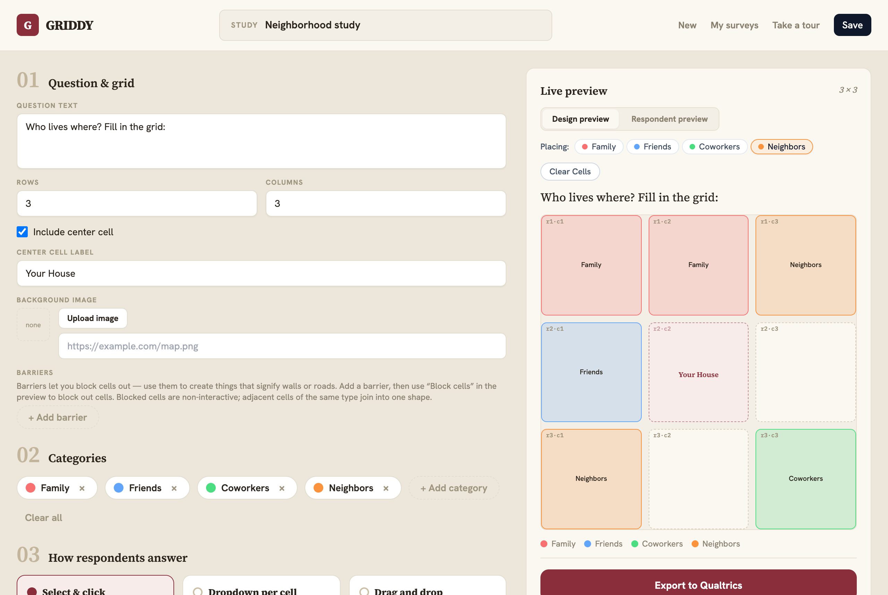
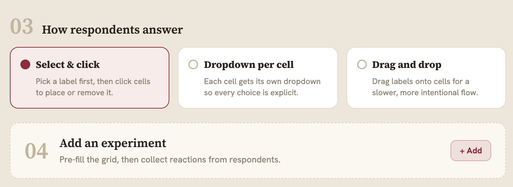
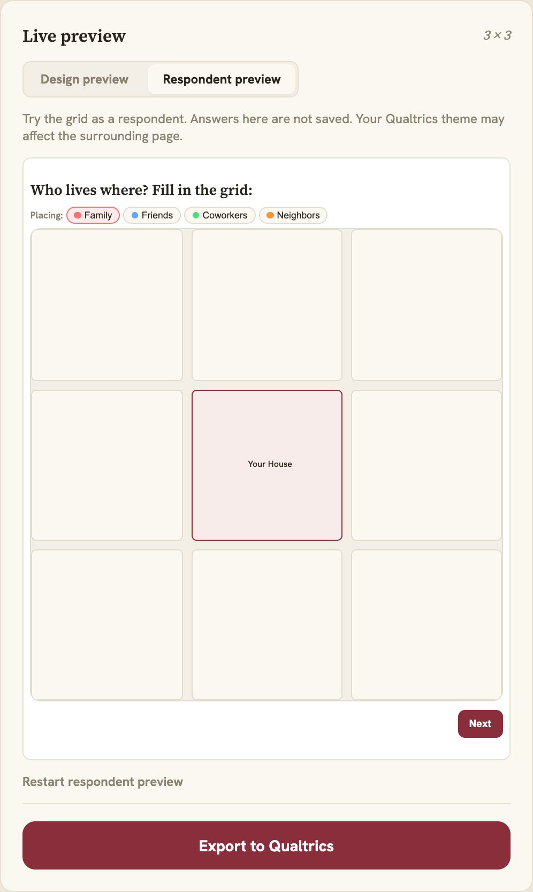
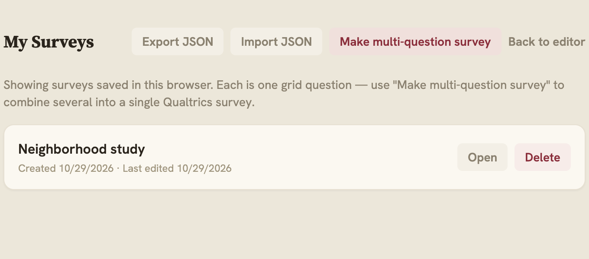
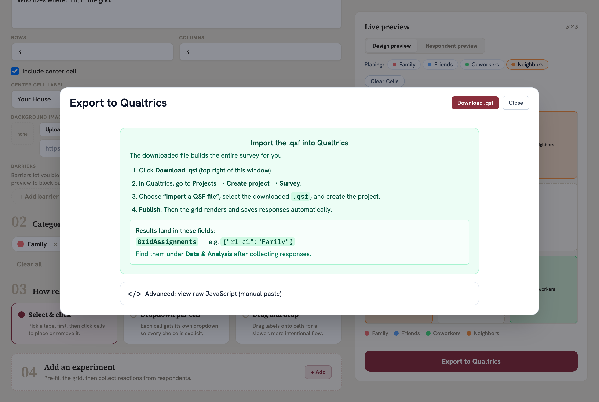
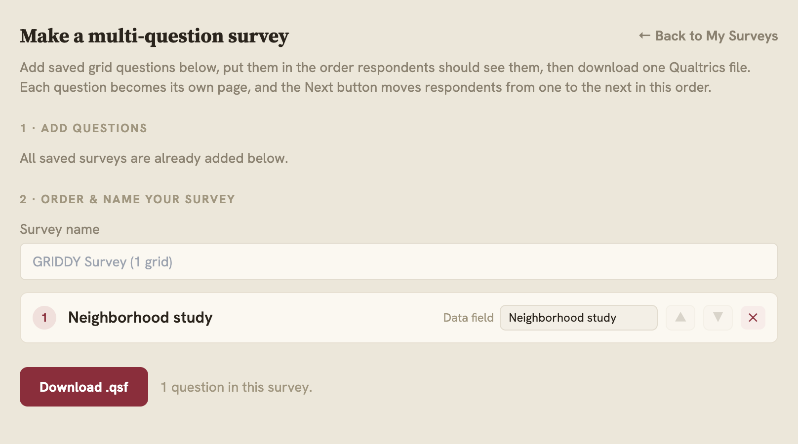

GRIDDY
Project documentation
Contents on the next page ↓
GRIDDY is a browser-only tool for building grid survey questions and exporting them to Qualtrics. There's no backend or database.
localStorage. They can be backed up as JSON..qsf file that Qualtrics imports directly, or a JS snippet to paste.GridAssignments, or GridPrefills / GridResponses in experimental mode).Editor (ConfigPanel) → EditorContext (state) → PreviewPanel
↓
surveysApi → localStorage qualtricsExport → .qsf / JS → Qualtrics
Stack: React 18, TypeScript, Vite, Tailwind, React Router, Vitest. Hosted on GitHub Pages as static files. Licensed under the MIT License.
Settings on the left, live preview on the right. Pick a category in the Placing row, then click cells to fill them in. Name the survey at the top and click Save.

/: question & grid settings (01), categories (02), and the live preview.Section 03 picks the input method. Section 04 turns on experimental mode, where the grid is pre-filled and respondents react to it.

Shows exactly what respondents will see in Qualtrics. It runs the real exported script, and answers here aren't saved.


/history: surveys saved in this browser, with JSON backup and restore.Click Export to Qualtrics, then Download .qsf, and import that file in Qualtrics. The dialog lists the steps and the field the answers are saved to.

From My Surveys, click Make multi-question survey. Add saved grids, order them, name each data field, then download one .qsf.

/history/combine: each grid becomes its own page in Qualtrics.| URL | File | Purpose |
|---|---|---|
/ | App.tsx | The editor and live preview |
/history | pages/HistoryPage.tsx | My Surveys: open, delete, JSON backup |
/history/combine | pages/CombineSurveysPage.tsx | Combine several surveys into one .qsf |
src/grid-types.ts)A survey is a GridConfig with four parts: layout (rows, cols, center cell, barriers), tuning (sizes), survey (categories, selection mode) and optional experimental (pre-filled grid + response labels). Cells are keyed "r{row}-c{col}", 1-based.
src/EditorContext.tsx)One reducer holds the survey being edited. Components read it with useEditor() and change it by dispatching actions such as updateLayout, updateSurvey, setConfig or newSurvey.
components/ConfigPanel.tsx | Left-hand editor UI |
components/PreviewPanel.tsx | Live preview and Export modal |
components/RespondentPreview.tsx | Runs the real exported script |
lib/qualtricsExport.ts | Builds the Qualtrics JS and .qsf |
lib/surveysApi.ts | Save, load and import surveys (localStorage) |
lib/imageInput.ts | Compresses uploaded images into the survey |
Add it to the type → give it a default in createDefaultConfig and normalizeConfig → add a control in ConfigPanel → render it in PreviewPanel and in qualtricsExport.ts → add a test.
Requires Node 22+ and git. No environment variables are needed.
git clone https://github.com/justinsola/GRIDDY.git
cd GRIDDY
npm install
npm run dev # http://localhost:5173| Command | Does |
|---|---|
npm run dev | Dev server with hot reload |
npm run build | Type-check, then bundle to dist/. This is what the Pages deploy runs. |
npm run preview | Serve the built dist/ locally |
npm test | Run the Vitest tests |
npm run lint | ESLint |
Before pushing: run npm run build (and ideally npm test and npm run lint). If it fails locally, the deploy fails too. Unused variables count as build errors.
To see exactly what will be deployed, build with the live site's path and preview it at http://localhost:4173/GRIDDY/:
BASE_PATH=/GRIDDY/ npm run build
npm run previewSaved surveys are stored per site: localhost and the live site keep separate lists. Use Export/Import JSON to move them.
A GitHub Actions workflow (.github/workflows/pages.yml) publishes the site. Merging to main is the deploy. There's no separate deploy command.
| Push to… | Result |
|---|---|
main | The workflow builds the app and the live site updates in a minute or two |
| Any other branch or PR | Only the CI checks run. The live site is untouched. |
The site is served at https://www.jlsola.com/GRIDDY/: a project site on GitHub Pages lives at the owner's Pages domain plus the repository name. The workflow passes the repository name to the build as BASE_PATH, so renaming the repository moves the site with no code change. Under the repo's Settings → Pages, the source must stay GitHub Actions.
git switch main && git pull
git switch -c feature/my-change
# ...build it, check npm run build...
git add -A && git commit -m "My change"
git push -u origin feature/my-changemain on GitHub.git revert <commit> on main and push. The workflow deploys a build without the change.Everything needed to deploy lives in this repository and the owner's GitHub account. No third-party dashboard is involved.
The app has client-side routes, so there's no real /history file. GitHub Pages serves 404.html for any path that isn't a real file, and the deploy workflow makes 404.html a copy of index.html, so loading or refreshing any page works. Two pieces of code keep routes and assets on the /GRIDDY/ path: vite.config.ts sets Vite's base from BASE_PATH, and src/main.tsx gives React Router the same path as its basename. Don't hard-code absolute URLs; use router links and relative asset imports.
npm run build, npm test and npm run lint all pass cleanly on main. GitHub Actions (.github/workflows/ci.yml) runs all three on every PR and every push to main. If one fails, something you changed caused it.
CI installs with npm ci, so when you change dependencies, commit the updated package-lock.json too.
GRIDDY is released under the MIT License, Copyright (c) 2026 Justin Lucas Sola. The JavaScript that GRIDDY exports into a Qualtrics survey carries the copyright and permission notice as a comment, so a survey that embeds it already satisfies the license's one condition.
/history and /history/combine.package-lock.json.LayoutTab.tsx and SurveyTab.tsx, and the unused localforage and react-webcam packages.justinsola/GRIDDY, adopted the MIT License, added CITATION.cff, and gave the README its mascot.